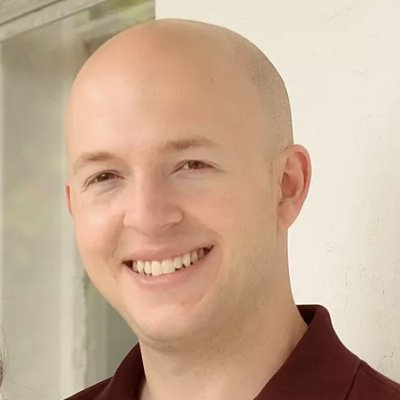
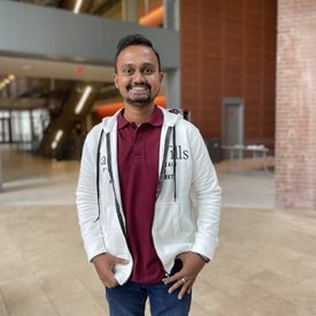
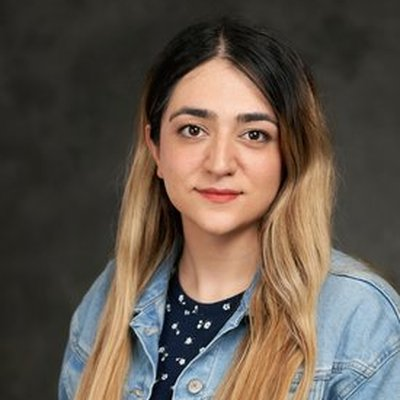

People
A small, interdisciplinary group spanning structural biophysics, cell biology, and computation.
Principal Investigator · Associate Professor, Biology & Chemistry
Carlos joined Syracuse University in 2014 and leads the lab's work on protein quality control in neurodegenerative disease. His training is in molecular biophysics, and his lab studies how the shuttle protein UBQLN2 recognizes damaged proteins, undergoes phase separation, and how disease-linked mutations disrupt these processes. He is a member of Syracuse's BioInspired Institute and its disordered-proteins faculty cohort. cacastan@syr.edu
Lab Manager / Research Scientist
Ph.D. in Biophysics, Johns Hopkins University (Baltimore, MD) — a graduate of the Doug Barrick lab. tpdao100@syr.edu
Postdoctoral Fellow
Ph.D. in Biological Sciences, CSIR-National Chemical Laboratory, Pune, India. Nirbhik started here as a postdoc in July 2023. He's diving head-on into investigating the driving forces for Dsk2 phase transitions, and quickly mastering NMR spectroscopy. nacharya@syr.edu

Postdoctoral Fellow
Ph.D. in Biology, Syracuse University (Syracuse, NY). Billy started in 2022, after graduating from Kate Lewis' lab at SU. His prior expertise is in zebrafish and deciphering functions of DNA-binding proteins important for nervous system development. He now develops live-imaging modalities to understand UBQLN function in cells. wehaws@syr.edu

Ph.D. student, Chemistry
Hirusha is using NMR to study SUF4, in collaboration with the Meyer lab. htliyana@syr.edu

Ph.D. student, Chemistry
Faeze is using NMR and phase separation assays to study Arabidopsis Dsk2B, in collaboration with the Meyer lab. fmousaza@syr.edu
Ph.D. student, Biology
Evelyn is using live-cell imaging to study the interactions between RTL8 and UBQLN2. rmah01@syr.edu
Graduate Student
Eden investigates how missense mutations associated with monogenic diseases disrupt the structural ensembles and functional properties of intrinsically disordered regions (IDRs). Joint with the Sukenik Lab. ivallari@syr.edu
List former lab members here, with where they went next — it's a nice way to show the lab's track record.